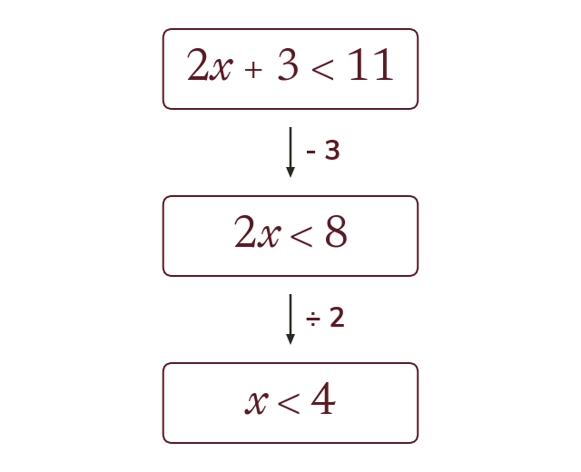

Solving like an equation
Solve an inequality like an equation, using inverse operations on both sides. Adding, subtracting, or multiplying or dividing by a positive keeps the sign.
An inequality is solved like an equation, by doing the same inverse operation to both sides. Adding, subtracting, or multiplying or dividing by a positive number keeps the sign the same way round.